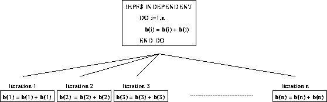

Next: Independent Example 2
Up: Data Parallel Execution
Previous: Independent Example 1

All the iterations are performed at the same time.
For more information, click here

Next: Independent Example 2
Up: Data Parallel Execution
Previous: Independent Example 1
Adam Marshall ©University of Liverpool, 1996
Tue Nov 26 19:51:50 GMT 1996